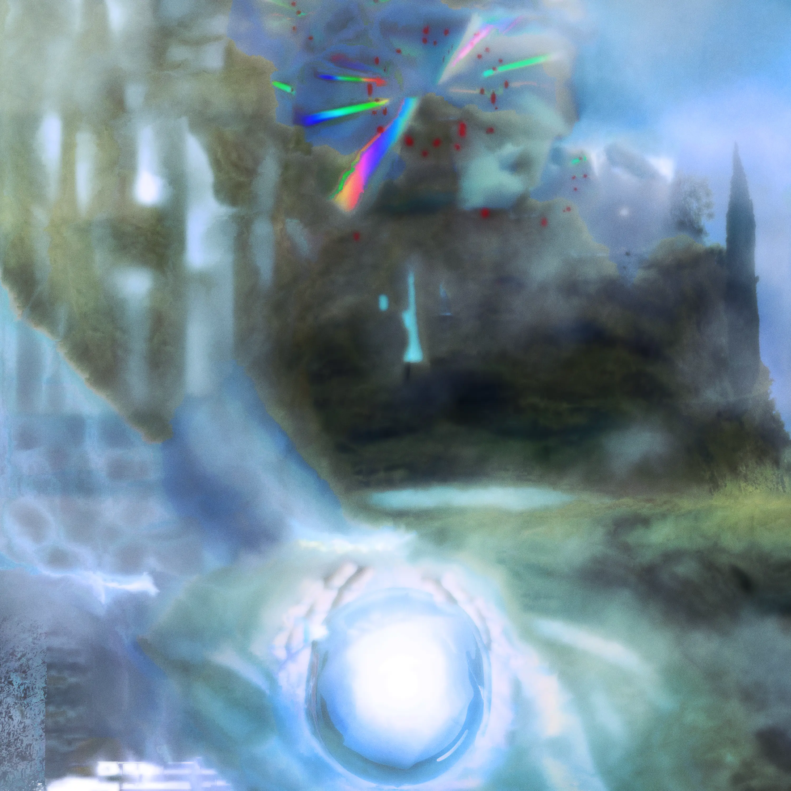

Memory Forgetter
Luuk Age
- Big Orb Energy
- Mass Comparison
- Helldisc
- Moss P3
- Glutter
- Horord Prog
- Fake Hand
- 0y
- Wind Dream With Giant
- Dogtown
- Average Past Reversing
- Auto
- Server Thoughts and Desires
- Requiem for Audio Data Loss and Organ
► 47:38
Back in 2021, I experimented with the sound of a glitching meditation cd. It turned into a lot more experiments with the manipulation of cd’s and mp3’s to create otherworldly sounds. The resulting album combines both meditative and jarring moments, like a computer’s intense dreams.
All music is composed, produced and mixed by Luuk van de Mosselaer. Huge thanks to Niels Adema, who played church organ on “Requiem for Audio Data Loss and Organ” in the Nicolaikerk in Utrecht. Artwork by Luuk van de Mosselaer.
Thanks to everyone who helped me think, gave feedback and listened to me ramble about a project that became a huge deal in my head.
released December 13, 2024